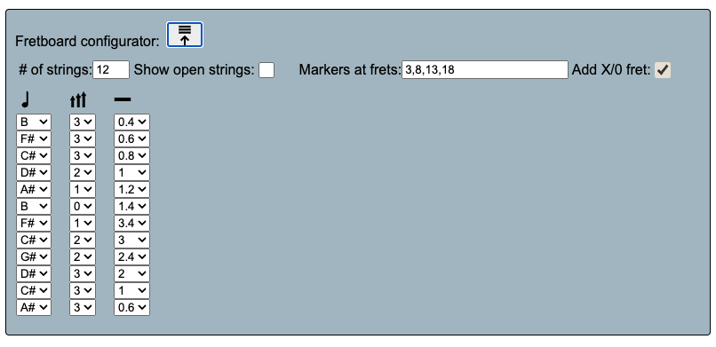

Fretboard Diagram Creator Manual
To start, This is an adaptation of Tobias Kolditz's splendid little
Fretboard Diagram Creator. I've added many extra features to it to
allow other kinds of fretboards amongst other things. The original (MIT style) copyright allows free
use and modifications. Thank you Tobias!
Some basic instructions to get you started.
Launch the creator
for reference you as you read this.
Basics
Diagram management
Saving and loading your diagram
- Saving a diagram is done with the download button

Saved diagrams will go into download directory used by your browser.
- Reading a diagram is done with the upload button
Exporting a diagram as in SVG file
- Exporting a diagram is done via the button

Exported svg files will go into download directory used by your browser.
- You can embed SVG files
into web pages or read it into other
editors like Illustrator. There is a very nice web based svg
graphics editor called Boxy SVG
that loads the diagrams just fine.
NOTE! If you refresh the page before saving
you'll lose your creation!
Tip: In the chrome browser, if you are making a bunch of
diagrams, you can change your download directory n chrome
via the
[:] -> Settings -> |Downloads|
settings page
Diagram Creation
Setting the type of fretboard you want to work with
The selection box on the bottom row of the menu allows you to
pick a type of fretboard you want to diagram.
This sets the number of strings and their tunings.
Setting the area of the fretboard to diagram
- Use the two (start and end) numeric entry fields to set the range
of frets you wish to diagram. You can change this later if desired
You'll notice some numeric fret numbers along the bottom edge
of the fretboard diagram. These numbers are markers that
correspond to frets that have associated navigation inlays on
the fretboard. They will vary depending on the type of fretboard.
Setting the default sharp/flat symbol
- Use the sharp/flat toggle button to toggle the notes to show sharps
or flats. You can change this as you are editing. Additionally, you won't be forced to
use all sharps or all flats
Selecting Fretboard string/fret locations to diagram
The fretboard starts with a matrix of "unactivated" string/fret
location dots on the fretboard.
- Clicking on a dot will 'activate it' and make it part
of your final diagram it also 'selects' it to be the current
target of editing operations that you can do using the
editing tool buttons below the fretboard grid
- Clicking on the [X] will clear out any changes you made
to the selected dot and 'deactivate' it from the diagram. you can
re-activate it by clicking on it again.
Show intervals with relation to a selected position
Switch the fretboard to show positions on the fretboard
as intervals of a root postion by selecting a position on the
and then clicking the Interval [<-->] button
Use the [sharp/flat] toggle button to revert the display back
to it's normal mode.
Editing the location dots
Changing the color
- The middle row of colored quickcolor buttons
change the color of the selected position dot with single click
-
You can change color for a quickcolor button by
<shift><click>-ing on the button and selecting a new color
from the pop-up color menu.
-
The are keyboard shortcuts for selecting quick colors.
Keys
<Shift-1> .. <Shift-6>
correspond with the 6
quickcolor buttons from left to right.
Changing the shape
-
The top row of shape buttons change the shape of the dots to other shapes
this is typically used for finger symbols
- Circle for 1st (index) finger
- Diamond for 2nd finger
- Triangle for 3rd finger
- Square for 4th finger
-
The keys
|1| .. |4| (Circle .. Square)
can also be used as shortcuts for setting the shape.
Changing the text
- The text inside the dots can be edited by double clicking
on the location. You're limited (practically) to a few characters
due to the size of the dot. the text will be preserved when you
switch display modes or until you reset it with the [X] button.
Displaying unactivated location dots
The Toggle button
toggles the display of unactivated location dots
If the unactivated dots are toggled off, you can still activate them
by just clicking in the area of the fretboard where you nomally see them
Clearing the fretboard
You can clear the fretboard to an empty state by clicking the
[Reset] Button. It will ask you if you really want to.
Key Command Summary
You can operate most of the buttons used to edit a selection
with keyboard commands
Color Commands
| Key |
Action |
| y |
Set Color Yellow |
| b |
Set Color Blue |
| g |
Set Color Green |
| r |
Set Color Red |
| w |
Set Color White |
| k |
Set Color Black |
Shift-1 |
Set Color to 1st (leftmost) button |
| Shift-2 |
Set Color to 2nd button |
| Shift-3 |
Set Color to 3rd button |
| Shift-4 |
Set Color 4th Button |
| Shift-5 |
Set Color 5th Button |
| Shift-6 |
Set Color 6th Button |
Shape Commands
| Key |
Action |
| 1 |
Set Shape Circle |
| 2 |
Set Shape Diamond |
| 3 |
Set Shape Triangle |
| 4 |
Set Shape Square |
Other Commands
| Key |
Action |
| I |
Switch the fretboard to show positions on the fretboard
as intervals in relation to the selection. Use the
[sharp/flat] toggle button to revert the display back to
it's normal mode.
|
| Delete or Backspace | Clear
edits and deactivate selection |
Customize... make your own fretboard tuning
If you need a tuning that's not in the standard
tuning selector, you can make your own tuning by accessing the
the dialog via the Customize.. [X]checkbox
Customize dialog (with 12 str matched reciprocal settings)

This dialog give you all the settings necessary to make your own
tuning and then apply it to the Diagram widget with the
button.
You can read in the current diagram configuraion with the
button. This is handy if there is an existing diagram that you want to
use as a starting point for making a configuration.
Customizer settings
# of strings
Set the number of strings for the fretboard. When you change
this number, the string table below it will automatically update
to the new number of strings.
The string table
- The Note column
The open string note for the string
- The Octave column
Set the octave of the open string note for this string.
Middle C is note 'C' and octave '4' for reference.
- The String Thickness column
Set the thickness of the string in the diagram display
Show open strings
Show fret position dots to the left of the nut to represent
open string notes. you would usually set to be on. If you are
using a tapping instrument, you usually turn this off since you
can't play those notes.
Markers at frets
A comma seperated list of fret numbers where you want your fret
inlays to ap appear
Add X/0 fret
Note: if you use this function. The Markers at frets
settings need to have values 1 larger that you would normally
expect. This is because the fret numbering is starting at 0
instead of 1.
The 'apply to diagram' button
Configures the diagram with the values configured in the dialog.